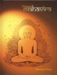

અંગ્રેજી પુસ્તકો
Kshamapana (1990) ; Non-violence : A Way of life (Bhagwan Mahavir) (1990) Glory of Jainism (1998) ; Stories From Jainism (1998) ; Essence of Jainism (2000) ; The Value and Heritage of Jain Religion (2000) ; Role of Women in Jain Religion (2000) ; A Pinnacle of Spirituality (2000) ;The Timeless Message of Bhagwan Mahavir (2000) ; Vegetarianism (2000) ; Journey of Ahimsa (2002) ; Our life in the context of five Anuvrat and Anekantwad (2002) ; Influence of Jainism on Mahatma Gandhi (2002) ; Tirthankar Mahavir (2003) ; Trailokyadeepak Ranakpur Tirth (2007) ; Jainism ; The Cosmic Vision (2008) ; The Brave Hearts (2009) |
||
જૈનદર્શનના સિદ્ધાંતોનો વૈશ્વિક પરિપ્રેક્ષ્યમાં કઈ રીતે વિનિયોગ થઈ શકે તેની વાસ્તવિક અને વૈચારિક ચર્ચા આમાં છે. આમાં વિશ્વધર્મ પરિષદ અને અન્ય આંતરરાષ્ટ્રીય પરિષદોમાં ડૉ. કુમારપાળ દેસાઈએ આપેલાં પ્રવચનોનો સંગ્રહ કરવામાં આવ્યો છે. પ્રાચીન અને અર્વાચીન એવા અનેકવિધ વિષયો પર સંશોધનપૂર્ણ, અભ્યાસનિષ્ઠ રજૂઆત મળે છે. |
||
Vegetarianism |
||
Essence of Jainism |
||
A pinnacle of Spirituality |
||
|  | Tirthankara Mahavir |
|
The Brave Heart |
||
ભગવાન મહાવીરના જીવન અને સંદેશને સચિત્ર રૂપે, આંતરાષ્ટ્રીય કક્ષાનું સ્વરૂપ આપીને અંગ્રેજી વાચકો સમક્ષ રજૂ કરવાનું કુમારપાળનું સ્વપ્ન હતું. જે એમના પુસ્તક ‘Tirthankar Mahavir’ રૂપે 2003ની સાલમાં સાકાર થયું. તીર્થસ્થાનોના સુંદર ફોટા, પ્રાચીન હસ્તપ્રતોમાંથી બહુરંગી પ્લેટ્સ તેમજ કલાત્મક અને આકર્ષક સજાવટથી ‘Tirhankar Mahavir’ પુસ્તક અનેરી ભાત પાડે છે. ભાષાનું લાલિત્ય. રસ અને વિષયની માવજત, કાળજીભર્યુ અને અધિકૃત સંશોધન, સુરુચિપૂર્ણ લે-આઉટ અને મુદ્રણ, અવતરણો અને કલાત્મક ચિત્રો, આકર્ષક ઉઠાવ અને બાંધણી, એમ દરેક રીતે કોઈ પણ આંતરરાષ્ટ્રીય કક્ષાના પુસ્તકની ટક્કર ઝીલે તેવું અદ્ભૂત પુસ્તક ‘Tirthankara Mahavir’ એમની અડધી સદીની સાહિત્યસેવાનું સર્વોચ્ચ શિખર છે. અને સાથે સાથે ભગવાન મહાવીર પ્રત્યેની એમની ભક્તિ, પ્રેમ અને સમર્પણનું ચરમબિંદુ છે. |